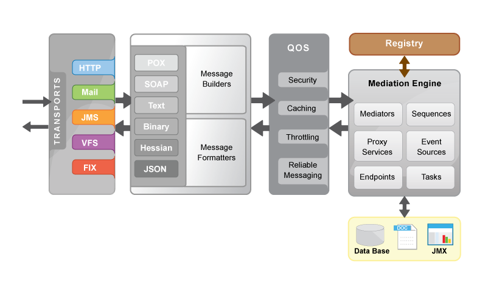

Apache Synapse Enterprise Service Bus (ESB)
Apache Synapse is a lightweight and high-performance Enterprise Service Bus (ESB). Powered by a fast and asynchronous mediation engine, Apache Synapse provides exceptional support for XML, Web Services and REST. In addition to XML and SOAP, Apache Synapse supports several other content interchange formats, such as plain text, binary, Hessian and JSON. The wide range of transport adapters available for Synapse, enables it to communicate over many application and transport layer protocols. As of now, Apache Synapse supports HTTP/S, Mail (POP3, IMAP, SMTP), JMS, TCP, UDP, VFS, SMS, XMPP and FIX.
Apache Synapse is free and open source software distributed under the Apache Software License 2.0. The latest version of Synapse is v3.0.1. It is a patch release which contains bug fixes and library upgrades to 3.0.0 major feature release.
Apache Synapse, Synapse, Apache, the Apache feather logo, and the Apache Synapse project logo are trademarks of The Apache Software Foundation
New in Version 3.0.0
-
High-performing PassThrough HTTP transport support for all mediation scenarios
- Ultra-fast, low latency mediation of HTTP requests
- Supporting a very large number of inbound (client -> ESB) and outbound (ESB -> server) connections concurrently
- Intelligently handle message content and content awareness built into the engine with shared buffer for handling data
- Automatic throttling and graceful performance degradation in the presence of slow or faulty clients and servers
- OCSP/CRL certificate validation support for HTTP transports
- Respond Mediator - A Mediator for responding back to the client from anywhere in the mediation flow
- Loopback Mediator - A Mediator for jumping from IN sequence to OUT sequence
-
Header Mediator improvements
- Support for adding/removing transport headers
-
New xpath functions
- url-encode xpath function
- Access system properties from get-property function
- base64 decode function
-
Message Processor improvements
- Resequencing Message Processor
- New blocking client implementation
-
Message Injector task improvements
- Support for injecting a message to Proxy services
- Support for injecting a message to named sequences
-
Callout Mediator improvements
- Support for WS-Security
- Inline Endpoint support
- Ability to dynamically set the EPR using 'To' header
- NTLM support
-
Script Mediator improvements
- Support for removing properties
-
REST API improvements
- Transport level access restriction
Key Features
- Proxy services - facilitating transport, interface (WSDL/Schema/Policy), message format (SOAP 1.1/1.2, POX/REST, Text, Binary), QoS (WS-Addressing/ WS-Security/WS-RM) and optimization switching (MTOM/SwA)
- Non-blocking HTTP/S transports for fast HTTP interactions and support for thousands of concurrent connections
- VFS transport for file manipulation and interaction with FTP, SFTP, CIFS and WEBDAV
- JMS support for binary, plain text, XML and SOAP payloads
- Mail transport with extensive support for POP3, IMAP and SMTP
- Support for industry driven Financial Information eXchange (FIX) protocol
- Built-in Registry/Repository, facilitating dynamic reloading of the configuration and associated resources (e.g. XSLTs, XSD, JS, ..)
- Built-in support for scheduling tasks using the Quartz scheduler
- Load-balancing (with or without sticky sessions) and fail-over routing
- Support for many Web Services standards including WS-Addressing, WS-Security and WS-Reliable Messaging
- Policy based message throttling and caching (with special support for clustered environments)
- Message splitting and aggregation
- Database lookup and update support with database connection pooling
- Fine grained statistics collection over sequences, endpoints and proxy services
- JMX monitoring and management
- Easily extendable with Java, Spring, or BSF Scripting languages (Javascript, Ruby, Groovy, etc.)
High Level Architecture
Apache Synapse is designed to be lightweight and fast. The non-blocking HTTP transport, the multi-threaded mediation engine and the streaming XML infoset combine to ensure that Synapse can mediate very high volumes of messages through the service bus with minimum delay and resource usage. Synapse also comes with comprehensive logging capabilities, statistics collection and JMX monitoring support which are crucial in production deployments.
Synapse uses Apache Axis2 as the underlying Web Services engine. Therefore it has outstanding support for Web Services and related standards such as SOAP and WSDL. Tried and tested Axis2 modules like Apache Rampart and Apache Sandesha2 can be used with Synapse with no configuration overhead. Using such external modules, Apache Synapse supports a range of Web Services standards including WS-Security and WS-Reliable Messaging. Synapse also makes use of the Axis2 clustering framework to provide enterprise grade clustering support.
Synapse is configured using a simple, XML-based configuration language. The configuration language and the related functional components are designed with SOA best practices in mind. It is trivial to store configuration fragments in an external SOA registry and import them to the mediation engine on demand. Synapse ships with a large collection of mediators that can be used to implement even the most complex enterprise integration scenarios. If necessary, the mediation engine can be extended by developing custom mediators using Java or your favorite scripting language.